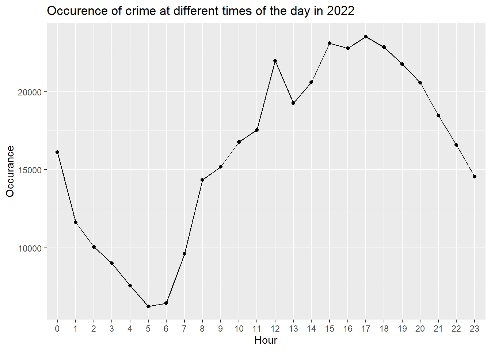
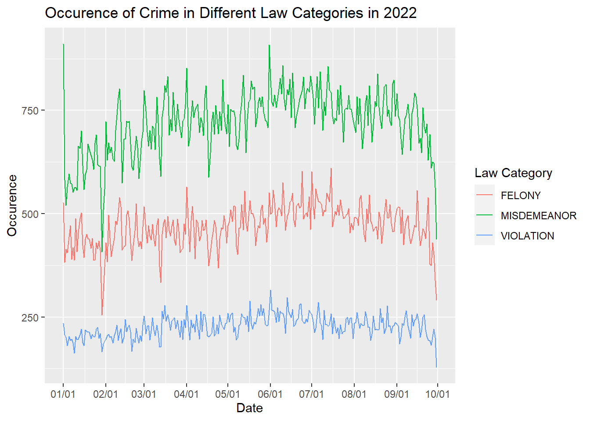
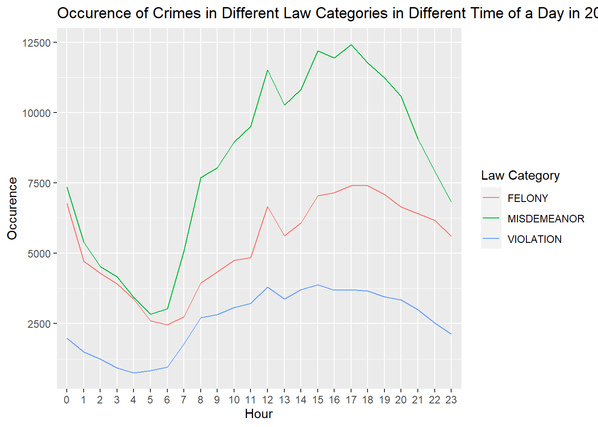

Chapter 4 Results
4.1 Time series analysis
The majority of the recorded crime in this dataset is happened in 2022 (>99%). Therefore, we focus on the time series analysis in 2022. Because of the release date of the dataset, we only have data before October.
| Year | Count |
|---|---|
| <2022 | 10113 |
| 2022 | 386739 |
4.1.1 Occurence Analysis
We can see from the above plot that the number of crimes in 2022 from January to October goes gradually up then down. It indicates that the number of crimes may have a positive correlation to the temperature. When weather is warmer, there tends to be more crimes.

This plot shos the occurrence of crime at difference times of the day in 2022. The occurrence of crime reaches to its lowest in the morning then gradually goes up. It reaches its peak at 3-5 p.m. then goes down. It’s against to our intuitation that most crime occurs at night. In fact, most of the crime occurs in the daytime, especially in the afternoon.
4.1.2 Law Category Analysis

The plot shows the occurrence of crime falling in different law categories in 2022. We can see from the plot the occurrence in decreasing number is misdemeanor, felony and violation. They all experience an increase and decrease in trend of occurrence in 2022. Moreover, occurrence of misdemeanor has the highest variance while the occurrence of violation is the most stable among the occurrences of these three kinds of crimes.

The above graph shows the crimes of all three categories reaches their lowest points at 5-6 a.m.. And they reaches their highest points at 3-5 p.m.. We can also see from the plot that in the night, there is another peak for felony and the rate of felony in all categories of crimes goes up. It’s to our intuition that the felony often occur at midnight.